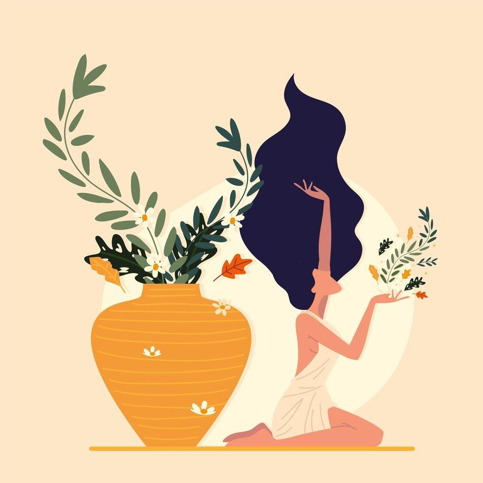

Qui suis-je
Anne-Laure, 52 ans
Un parcours fait de rencontres, de questions et de belles découvertes. Je souhaite aujourd’hui vous transmettre tout ce que j’ai expérimenté en travaillant sur moi.

Mon parcours
De l’écoute des autres à l’écoute de soi
Chaque étape de la vie m’a appris quelque chose :
- Sur la confiance et l’estime de moi,
- Les limites à poser pour se faire respecter,
- Mon corps et ses ressentis.
- École de commerceUn diplôme, puis des années à l’écoute des personnes en tant que commerciale.
- Grande entreprise internationaleLe goût de la relation humaine, au quotidien.
- IndépendanteCréation de ma société de chasseur d’appartements.
- Start-up immobilièreUne nouvelle aventure professionnelle.
- Mes trois enfantsQuelques années consacrées pleinement à les élever.
- Au début de la quarantaineLa découverte du sport et d’une alimentation saine et rééquilibrée, toujours source de plaisir, pour développer la confiance en moi et en mon corps.
- Les épreuves de la vieDeuils, maladies… et la découverte de pratiques corporelles, spirituelles et artistiques : danse, lecture, écriture, méditation.
Ce que j’ai gagné
Grandir, plus alignée avec mes valeurs
Découvrir qui j’étais vraiment et ce que je voulais devenir, pour gagner en sérénité.
Désormais
- J’ose plus
- Je m’accepte davantage
- Je pose mes limites
- Je me respecte davantage
Ma transmission
Débloquer ce qui vous retient
Je souhaite vous transmettre ce que j’ai expérimenté pour débloquer :
Vos schémas limitantsVos loyautés invisiblesVos peursVos croyances

Passionnée par
- Le yoga
- La décoration
- La cuisine, gourmande mais saine
- Les relations humaines
- La place de la femme dans la société
Amoureuse de la beauté
- De la nature
- De l’art sous toutes ses formes : théâtre, danse, peinture, architecture…
Nous allons vivre ensemble des moments riches et intenses, car je crois au lien puissant qui nous relie entre femmes.
Faisons connaissance
Réservons un créneau et prenons quelques minutes pour échanger. Je me déplace à votre domicile dans Paris.
Hâte de vous accompagner !